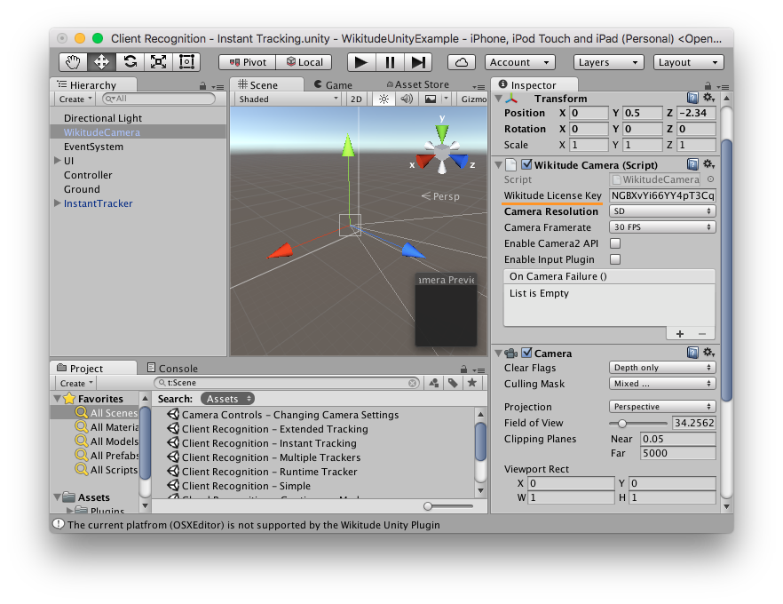
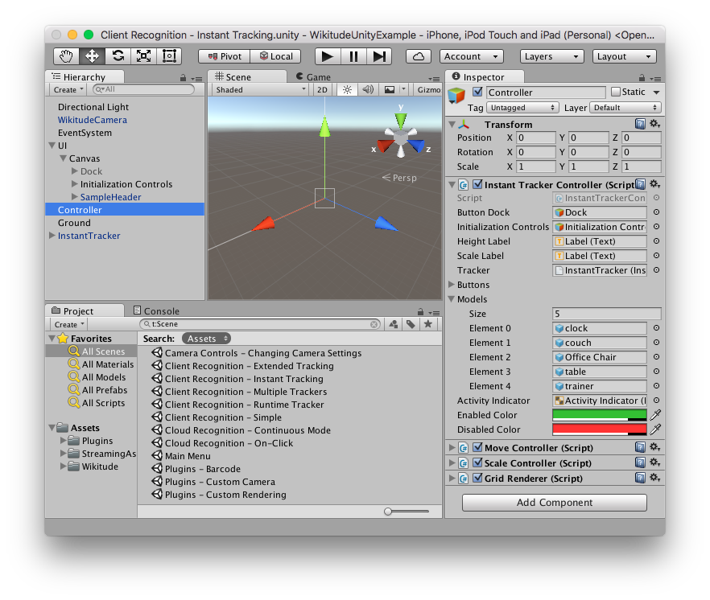
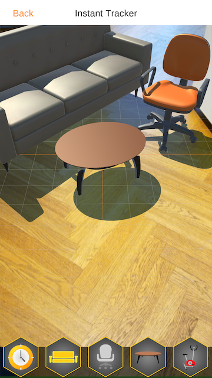

Getting started
Introduction to the Wikitude SDK
Welcome to the Wikitude SDK. This document is designed to help you from your very first steps with the Wikitude SDK all the way through to advanced concepts and examples for developing your augmented reality project.
- Unity 5.4.5 or higher
- Rendering engines
- OpenGL ES 2
- OpenGL ES 3.x
- Metal (iOS only)
- Because Unity currently doesn't support 64 bit libraries on Android, performance on such devices might be lower than similar devices running iOS 64 bit.
Recommended Usage of this Documentation
The documentation is arranged in a way to guide you through the various steps in your development process. We recommend following each of the steps outlined below and reading the documentation in the order displayed.
Setup your project with the Unity Plugin
In this section we describe the necessary steps to setup a project in a detailed guide.
View the sample application
Viewing the sample requires the corresponding reference image. It is available directly in the description of the sample. You can either view it on your monitor or print it.
The Wikitude Native SDK - Augmented Reality for your own app
The Wikitude Native SDK is a software library and framework for mobile apps used to create augmented reality experiences. The Native SDK supports use cases which require image recognition and tracking technology (vision based augmented reality).
To use the Wikitude Native SDK within a Unity project, simply import the Wikitude.unitypackage into a existing Unity project and import all assets that are part of the .unitypackage. After the import is done, use the WikitudeCamera prefab in combination with one of the Tracker prefabs.
Architecture of the Wikitude SDK
The image above shows the different components of the Wikitude SDK and possible approaches for creating augmented reality apps. Each of these approaches are based on a certain development environments (IDE) and platforms:
- Computer Vision Engine: The computer vision engine is a core component of the Wikitude SDK and used by all platforms. It includes three major parts in its own: SLAM Engine, Image Recognition Engine and the Cloud Recognition engine It is not directly accessible, but wrapped either by the Native API (Java, Obj-C) or the JavaScript API.
- Wikitude SDK - Native API: Provides access to the Wikitude computer vision engine natively for Android (Java) and iOS (ObjC). It also can load plugins via the Wikitude Plugins API.
- Wikitude SDK - JavaScript API: Allows to build augmented reality worlds on basis of HTML and JavaScript. It is available for Android and iOS. The JavaScript API provides access to the functionality of the computer vision engine, location based AR, the Plugins API and dedicated rendering functionality.
- Wikitude SDK - Plugins API: An API to connect your own plugins to the Wikitude SDK. (NOTE: Wikitude SDK plugins have nothing to do with the Cordova or Unity Plugin concept.)
- Wikitude SDK - Cordova Plugin: On top of the JavaScript API the Cordova plugin allows to use the Wikitude SDK in combination with Apache Cordova.
- Wikitude SDK - Titanium Module: On top of the JavaScript API the Titanium module allows to use the Wikitude SDK in combination with Titanium.
- Wikitude SDK - Unity3D Plugin: On top of the Native API the Unity plugin allows to use the Wikitude SDK in combination with Unity.
- Wikitude SDK - Xamarin Component: On top of the JavaScript API the Xamarin component allows to use the Wikitude SDK in combination with Xamarin.
The Wikitude Developer Portal
The Wikitude Developer Section should be your first stop when you have specific development related questions. The portal hosts a very active Developer Community Forum where Wikitude staff members are constantly assisting other developers with helpful tips and advice. You can find How-To's and a constantly evolving FAQ section there as well.
Feedback and Contact
We are always interested in your feedback and suggestions how we can improve this documentation. Please use the contact form on our website or visit us on Google+, Facebook or Twitter.
Setup Guide Unity Plugin
There are only a few steps necessary to add the Wikitude Unity Plugin to your existing Unity project. This guide will explain them in detail. In general the steps are
- Import the Wikitude.unitypackage into your project
- Add the
WikitudeCameraand one of theTrackerprefabs to the Unity scene hierarchy and configure their properties - Add a custom augmentation to the tracker as child GameObject to the
Trackable - Export your project and change Xcode Build Settings in order to fully integrate the Wikitude Native API in your Unity project
Import the Wikitude.unitypackage
The Wikitude Unity Plugin comes as a standard .unitypackage and can be imported through the usual Unity package import procedure.
In your Assets inspector, right click and choose Import Package -> Custom Package.
Select the downloaded Wikitude.unitypackage in the presented open file browser and click open. You should import all items that are part of the Wikitude.unitypackage.
Use the Wikitude Unity plugin
After the Wikitude.unitypackage was imported, its components and scripts can be used to define a custom augmented reality experience. The example section describes in more detail how those prefabs and scripts can be used to do so.
Export and Xcode Build Settings Changes
Once the application is setup in Unity and ready for testing on a real device, it needs to be exported as an Xcode project for iOS or built for Android either directly by creating an .apk file using Unity or by exporting an Android Studio project.
Export to Xcode
iOS developers need to open the exported project and manually do the steps listed below.
- Before exporting, make sure the
Target minimum iOS versionis set to 9.0 or later in the Unity in Player Settings. This can also be done in the Xcode project, but setting it in Unity will ensure it doesn't get overwritten when rebuilding your project. - The
WikitudeNativeSDKframework has to be added as anEmbedded Binary. Please refer to the Wikitude iOS Native SDK setup guide for more information. - In the
Info.plistfile, make sure there is an entry forNSCameraUsageDescriptionwith an appropriate value if you plan to deploy to iOS 10 or higher. Not doing so will lead to a runtime crash on the device. If you are using Unity 5.4.2 or higher, this setting can be done directly in Player Settings.
After these steps are done once, building with Append or by pressing Cmd + B will ensure that the settings are kept.
Export an .apk file
If you don't need an Android Studio project, building directly from Unity is the fastest way to run your app on an Android device.
- In Unity open
File | Build Settings... - Make sure
Androidis the current build target. If not, selectAndroidfrom the list and clickSwitch Platform - Click
Build And Runand choose where to save the .apk file. If you have an Android device connected, it will also install the app on it.
After this is done once, pressing Ctrl + B (Windows) or Cmd + B (Mac) will automatically create the .apk file and install it on your device, if it is connected.
Export to Android Studio
Unfortunately Unity projects exported as Android Studio projects do not work out of the box. Some manual work is required which we described in detail below:
- In Unity open
File | Build Settings..., checkGoogle Android Projectand clickExport - Open Android Studio and click
Import Project (Eclipse ADT, Gradle, etc.) - Within the file selection dialog, navigate to the folder where you exported the project and select the folder named after your app
- In the next step choose a new, empty folder to import and click on
Next - Finish importing by clicking
Finishon the next screen - In Android Studio open
File | New | New Module ... - Select
Import .JAR/.AAR Packageand click onNext - For
File name:navigate to the folder where you originally exported the project from Unity and then to the sub-folder named after your app - Select the file
wikitude-unity-bridge.aarunder libs and click onFinish - Open the file
build.gradle (Module: YOUR_APP_NAME)and add the linecompile project(':wikitude-unity-bridge')under dependencies - The project is now running in Android Studio
Unity Requirements and supported versions
- Unity 5.4.5 or higher
- Rendering engines
- OpenGL ES 2
- OpenGL ES 3.x
- Metal (iOS only)
- Because Unity currently doesn't support 64 bit libraries on Android, performance on such devices might be lower than similar devices running iOS 64 bit.
Supported Devices
Wikitude SDK is running on devices fulfilling the following requirements:
| Sensor-based AR (Geo-AR) | Image recognition and tracking | Instant and Object tracking | |
|---|---|---|---|
Android (Native API) |
|||
Android (Native API) |
|
|
|
iOS (Native API) |
|||
iOS (Native API) |
|
|
|
How to obtain a free trial license
The Wikitude SDK requires a valid license key to be able to run properly. An empty or missing license key will block the augmented reality view from showing any meaningful content. You will see a watermark across the screen with the words License Key Missing. All JavaScript API calls will be ignored and not interpreted.
When downloading the Wikitude SDK you will be forwarded to the license generation page, where a trial license key is automatically generated for you.

Copy the key into your app, which will unlock the trial mode of the Wikitude SDK. The trial mode of the Wikitude SDK contains the full feature set of the Wikitude SDK but will show a Trial watermark across the screen.
Each trial license key is valid for every application ID on every operating system. You can use the same trial license key in multiple apps.
Where should I enter the license key
Unity Plugin
To use the Wikitude Unity Plugin with a certain license key, paste your license key into the text field of the WikitudeCamera prefab. 
iOS App Store submissions
Removing simulator architectures
To work around an Xcode App Store submission bug, the WikitudeNativeSDK.framework contains a shell script that removes the simulator architectures from the .framework. This script can either be run from the Terminal application or a Run Script Phase in Xcode.
Here is a snippet for the Terminal application. Note that the path to the script and the path to the WikitudeNativeSDK.framework needs to be known.
sh *PATH/TO/THE/WIKITUDE/SDK/PACKAGE*/Tools/Scripts/strip_wikitude_framework.sh -s -p *PATH/TO/THE/WikitudeNativeSDK.framework
To run this script in a Run Script Phase, simply copy the following snippet into a new Run Script Phase text field. Please make sure that the Run Script Phase is positioned right after the Embed Frameworks build phase (You can reorder individual build phases).
sh "${BUILT_PRODUCTS_DIR}/${FRAMEWORKS_FOLDER_PATH}/WikitudeNativeSDK.framework/strip_wikitude_framework.sh" -s -p "${BUILT_PRODUCTS_DIR}/${FRAMEWORKS_FOLDER_PATH}/WikitudeNativeSDK.framework"
Bitcode
The WikitudeNativeSDK.framework contains Bitcode information to support App Thinning. Building a .framework with bitcode enabled leads to a larger file size. In case the application that uses the WikitudeNativeSDK.framework does not support bitcode and file size is a problem, bitcode information can be removed using the wikitude_bitcode.sh shell script. This script can either be run from the Terminal application or a Run Script Phase in Xcode. Wikitude recommends to use the Terminal application to not unnecessarily increase build time.
Here is a snippet for the Terminal application. Note that the path to the script and the path to the WikitudeNativeSDK.framework needs to be known.
sh *PATH/TO/THE/WIKITUDE/SDK/PACKAGE*/Tools/Scripts/wikitude_bitcode.sh -s -p *PATH/TO/THE/WikitudeNativeSDK.framework
Here is a snippet for the Run Script Phase. Simply copy this snippet into the script phase text field:
sh "${BUILT_PRODUCTS_DIR}/${FRAMEWORKS_FOLDER_PATH}/WikitudeNativeSDK.framework/wikitude_bitcode.sh" -s -p "${BUILT_PRODUCTS_DIR}/${FRAMEWORKS_FOLDER_PATH}/WikitudeNativeSDK.framework"
Examples & Tutorials
The Wikitude Unity example project gives you a quick overview of the capabilities offered by the Wikitude Native SDK in combination with Unity. You can find the project in the Wikitude Unity download package. Once the .zip file is extracted, the project is located in the /Examples folder. In the Assets/Wikitude/Samples/Scenes folder you will find scenes focused on specific parts of the SDK. The examples are also included in the Unity package located in the /Package folder.
Structure
Each example focuses on a part of the SDK specified by its name. Each example follows a similar structure. They all include the WikitudeCamera prefab, a UI root GameObject and a Controller GameObject with a corresponding script used to provide the custom behaviour for each sample. Most samples also include an ImageTracker, CloudTracker, ObjectTracker or InstantTracker prefab, while some create them it during runtime.
Usage
To run the application, open the Unity scene called Main Menu which is located in the Assets/Scenes folder. Once the project is loaded, it needs to be exported as either Xcode project (iOS) or Android Studio project (Android). Alternatively, you can build an Android .apk directly.
Please see the Setup Guide page for more info on the build steps required for each platform.
Target Images
Image recognition samples
Click here to download all target images


 Cloud Recognition">
Cloud Recognition">


Object recognition samples
Object recognition 360 view of the truck">
360 view of the truck
Image Recognition
This example shows how to recognize images in the viewfinder and overlay it with images.
For a better understanding, here are some terms that will be used in the following and other section of this documentation related to vision-based augmented reality.
Target: A 2D target image and its associated extracted data that is used by the tracker to recognize an image.
Target Collection: An archive storing a collection of 2D targets that can be recognized by the tracker. A target collection can hold up to 1000 targets. Target collections are stored as
.wtcfilesImageTracker: The tracker analyzes the live camera image and detects the 2D targets stored in its associated target collection. Multiple trackers can be created, however only one tracker can be active for recognition at any given time.
Simple Image Recognition in Unity
The Wikitude Unity Plugin is based on pre-configured prefabs. There are two types of prefabs available. One is the WikitudeCamera prefab and the other ones are tracker prefabs.
WikitudeCamera Prefab
The WikitudeCamera prefab takes care about rendering the live camera stream fullscreen behind all your augmentations. Attached to this prefab is a script component which has one parameter that is not pre filled. This parameter is for the Wikitude SDK license key and has to be filled with your very own license key. You can either buy a commercial license from our webpage or download a free trial license key and play around with our Native SDK in combination with Unity.
ImageTracker Prefab
To add a tracker prefab to the scene, simply drag the ImageTracker prefab into the scene hierarchy.
An ImageTracker itself needs a Wikitude Target Collection (.wtc file) which contains information needed to detect those reference images. Target collections can be generated and downloaded from the Wikitude Target Manager - a free web based tool, that you can access with your developer account. You can also generate .wtc files right inside Unity with the WTC Editor. Place the .wtc file into the StreamingAssets folder, so that the Wikitude Native SDK can load them at runtime. To specify which .wtc file should be used, select the ImageTracker game object in the scene. Make sure that the Target Source is set to Target Collection Resource and using the dropdown next to Target Collection you can choose the desired one.
To react on events like successfully loading of a .wtc file, you can use the Unity Events listed in in the inspector of the ImageTracker. These events are split into two groups. The first group contains events triggered by the TargetCollectionResource when the wtc file was loaded of if there was an error. The second group are events triggered by the ImageTracker itself if it was successfully initialized with the desired .wtc file or not. On the desired event, click the plus sign to add a new subscriber, drag the GameObject that should receive the event over the None (Object) field and select the function you want to be called from the No Function dropdown.
When subscribing to events that have a single basic parameter type, make sure to select your function from top list marked with Dynamic, rather than the static version from the bottom. This ensures that the parameters are passed correctly from the Wikitude plugin and are not overwritten by Unity.
For more information on working with Unity Events, please check the Unity Manual and Events Tutorial.
Define custom augmentations
Also part of the ImageTracker prefab is an ImageTrackable object. A trackable defines which targets from your collection you want to be tracked.
If the tracker is using a .wtc file located in the StreamingAssets folder, the ImageTrackable inspector will show a list of all the targets in the .wtc file. By toggling the Active button, you can select which targets will be tracked by this trackable, or you can choose Select All at the top to include all the targets. You can similarly choose which targets should use extended tracking.
By pressing the Preview button, the target will be displayed in the 3D view of the scene, providing a convenient way to place your augmentation relative to the target.
If the .wtc file is located somewhere else, for example if you are downloading it at runtime, or when using CloudRecognitionService instead, you can still select which targets will be included by entering the target name into the TargetPattern text field. Possible values are full target image names (e.g. pageOne, pageTwo) or wildcards (page*). You can use * if you want to include all targets.
targetName used with the ImageTrackable component correspond to one of the target names in your target collection. You can also use wildcards to match any target or only a specific subset of targets.
In order to place 3D objects at the location where the reference image was found in the camera stream, add any GameObject as a child to the ImageTrackable object. During runtime, only the transform of the camera will be changed, so you can place and scale the ImageTrackable GameObject and its children however it is most convenient for you. Keep in mind that if you move the ImageTrackable GameObject during runtime, the camera will follow it, so you won't see any effective changes. If you need to move augmentations relative to the camera, for example when dragging augmentations based on user input, please make sure not to move Trackable GameObject, but its children.
The Auto Toggle Visibility toggle is enabled by default. When this is checked, the ImageTrackable GameObject will be automatically disabled when the target is out of view and enabled back when a target is tracked again.
To handle visibility manually, you can turn this toggle off and subscribe to the OnImageRecognized and OnImageLost events on the trackable. This can be useful when you want to show different augmentations based on which target was tracked. The string parameter of these events will indicate which target was tracked or lost.
The OnImageRecognized and OnImageLost events are called even when the Auto Toggle Visibility toggle is turned on. As an example, the Image Recognition - Extended Tracking updates the UI when the target is lost by handling OnImageLost.
Multiple Targets
An image tracker can track multiple targets at the same time. This can be configured in the ImageTracker inspector, by setting the Concurrent Targets to a value larger than 1. However, keep in mind that if you don't plan to use multiple targets, it is best to leave the value at 1 for optimal performance.
To define augmentations for multiple targets, you will need to set a prefab to the Drawable field in the ImageTrackable inspector. At runtime, when a new target is recognized the Drawable prefab will be instantiated and placed in the scene as a child of the Trackable and when the target is lost, it will be destroyed. When multiple targets are being tracked, their corresponding Drawables are positioned in the game world to match what the camera sees. This also means that you can infer the relative positions between targets directly in the game world.
This behaviour was designed to allow easy setup for simple use cases, but if you may need more control over the lifetime of the augmentations. If that is the case, you can leave the Drawable field empty in the ImageTrackable inspector and add callbacks to the OnImageRecognized and OnImageLost events. When OnImageRecognized is called, the ImageTarget that is passed as a parameter will contain a Drawable GameObject property. This empty GameObject behaves the same way as the Drawable described above and you should use it as a parent for your augmentations, to make sure they are positioned properly.
public void OnImageRecognized(ImageTarget recognizedTarget) {
// Create the custom augmentation.
// You can use recognizedTarget.Name and recognizedTarget.ID
// if you need custom augmentations for each target and instance.
GameObject newAugmentation = GameObject.CreatePrimitive(PrimitiveType.Sphere);
// Set the newAugmentation to be a child of the Drawable.
newAugmentation.transform.parent = recognizedTarget.Drawable.transform;
// Position the augmentation relative to the Drawable by using the localPosition.
newAugmentation.transform.localPosition = Vector3.zero;
}
Keep in mind that the Drawable is still destroyed when the target is lost, so if you still have the augmentations attached to it, they will be destroyed as well. The OnImageLost event is called before the Drawable is destroyed, so you can use that event to move the augmentations somewhere else if they need to persist after the target was lost.
In case the same target is detected multiple times simultaneously, the ID property in the ImageTarget parameter will help you distinguish between them.
Extended Tracking
Extended tracking is an optional mode you can set for each target separately. In this mode the Wikitude SDK will continue to scan the environment even if the original target image is not in view anymore. So the tracking extends beyond the limits of the original target image. The performance of this feature depends on various factors like computing power of the device, background texture and objects.
If the .wtc file containing the targets is located in the StreamingAssets folder, you should be able to see a list of all the targets in the inspector of the Image Trackable. To enable extended tracking, simply tick the Extended tracking option next to each target you want to extend, or select Extend All at the top of the list to extend all the targets.
If the .wtc file is loaded at runtime from a custom location, the Image Trackable will have a simpler interface, that will allow you to enable extended tracking manually and specify the names of the targets you would want to be extended. You can set the first name in the list to the wildcard * to extend all targets in the collection.
When Extended Tracking is enabled, the ImageTracker will fire OnExtendedTrackingQualityChangedEvents, which will let you know how well extended tracking is working based on the factors mentioned above.
Runtime Tracker
Image trackers can be created at runtime with no restrictions on the location of the target collection used. To do this, simply create a new GameObject and add the ImageTracker component to it, select TargetCollectionResource as the TargetSourceType and create a new TargetCollectionResource object. If you are using a collection located in the StreamingAssets folder, the TargetPath property should be the path relative to the StreamingAssets folder and UseCustomUrl property should be false.
If you want to use a collection located elsewhere on the device or on the web, the TargetPath property should be set to the absolute path to the target, prefixed by the protocol file://, http:// or https:// as appropriate. The UseCustomUrl in this case should be set to true. Please see the sample Client Tracker - Runtime Tracker as an example of how to set this up.
Trackables can also be created at runtime, but make sure to add them as a child of the tracker before the Start() method is called on the parent tracker, otherwise it won't get registered in time.
GameObject trackerObject = new GameObject("ImageTracker");
ImageTracker imageTracker = trackerObject.AddComponent<ImageTracker>();
imageTracker.TargetSourceType = TargetSourceType.TargetCollectionResource;
imageTracker.TargetCollectionResource = new TargetCollectionResource();
imageTracker.TargetCollectionResource.UseCustomURL = true;
imageTracker.TargetCollectionResource.TargetPath = "https://url.to.your.collection/collection.wtc";
GameObject trackableObject = GameObject.Instantiate(TrackablePrefab);
trackableObject.transform.SetParent(imageTracker.transform, false);
Creating trackers at runtime is also possible when using the CloudRecognitionService instead of a TargetCollectionResource
Multiple Trackers
You can have multiple trackers in the same scene, but only one can be active at a time. If you enable a second one, the first one will be automatically disabled by the plugin.
Instant Tracking
The following sections detail the instant tracking feature of the Wikitude Native SDK by introducing a minimal implementation, showcasing the simplicity the Wikitude Native SDK provides.
SMART - Seamless AR Tracking
SMART is a seamless API which integrates ARKit, ARCore and Wikitudes SLAM in a single augmented reality SDK, cross-platform, for any device. It ensures the delivery of the best possible augmented reality experience on a wider range of devices, covering 92,6% of iOS devices and about 35% of Android devices available in the market.
SMART is enabled by default but can be disabled by unchecking the SMART Enabled checkbox located at the top of the Instant Tracker inspector.
Alternatively, it can be disabled in code using the SMARTEnabled property on the InstantTracker. Please keep in mind that this needs to happen before the InstantTracker initializes its native counterpart, which happens during the OnEnable method.
public InstantTracker tracker;
void Awake() {
tracker.SMARTEnabled = false;
}
To check if the device supports platform assistance for tracking, WikitudeSDK.IsPlatformAssistedTrackingSupported can be called. Please keep in mind that this needs to be called after the Start method of the WikitudeCamera was executed, to make sure that the native components are properly initialized.
if (WikitudeCamera.IsPlatformAssistedTrackingSupported) {
// Device offers platform tracking capabilities (ARKit or ARCore)
}
SMART provides improved tracking capabilities at the expense of control. Because of that some Wikitude SDK features are not available when platform tracking capabilities are used by enabling SMART.
| Features | SMART ON and platform assisted tracking supported | SMART OFF |
|---|---|---|
| Improved Tracking | x | |
| Plane Orientation | x | |
| Camera Control | x |
Introduction
Instant tracking is an algorithm that, contrary to those previously introduced in the Wikitude SDK, does not aim to recognize a predefined target and start the tracking procedure thereafter, but immediately start tracking in an arbitrary environment. This enables very specific use cases to be implemented.
The algorithm works in two distinct states; the first of which is the initialization state. In this state the user is required to define the origin of the tracking procedure by simply pointing the device and thereby aligning an indicator. Once the alignment is found to be satisfactory by the user (which the users needs to actively confirm), a transition to the tracking state is performed. In this state, the environment is being tracked, which allows for augmentations to be placed within the scene.
The instant tracking algorithm requires another input value to be provided in the initialization state. Specifically, the height of the tracking device above ground is required in order to accurately adjust the scale of augmentations within the scene. To this end, the example features a range input element that allows the height to be set in meters.
During the initialization, another parameter can be set which influences the alignment of the instant tracking ground plane. This ground plane is represented by the initialization indicator and can be rotated in order to start instant tracking at e.g. a wall instead of the floor.
Basic Instant Tracking
The Instant Tracking example provides a simple implementation of an application that allows users to place furniture in their environment.
Scene Setup
The scene consists mainly of the following parts:
WikitudeCamera: the standard prefab for theWikitudeCamerais used, with the exception that it is running in SD at 30 FPS. This is the recommended setup forInstant Tracking, as the algorithm is computationally intense and users might experience slowdowns on older devices.UI: the root of theUIwe will be using in this sample. SinceInstant Trackingworks in two distinct phases, theUIis also split in two, allowing to completely switch the interface. When theInstant Trackeris inInitializingmode, theUIonly displays a slider to control the height, as explained previously and a button to switch toTrackingmode. After the switch is done, theUIwill display a button for each furniture model that can be added to the scene. Each button has anOnBeginDragevent trigger on it that notifies the controller when a new furniture model needs to be added to the scene. The event trigger also has anintparameter, specifying which model should be created.Controller: container for multiple custom script components:InstantTrackerController: coordinates the activity between theInstant Tracker, theUI, the augmentations and the touch input.Gesture Controllers: react to touch input events and move or scale the augmentations accordingly.Grid Renderer: renders a grid with 25 cm spacing that can be helpful during initialization and tracking
Ground: a simple transparent plane with a custom shader that enables shadows on it. The plane also has a collider on it and can be used for physics interaction.Instant Tracker: the component that actually does all the tracking.

Instant Tracker Controller
The controller script coordinates all the other components of the scene. It contains references to all the UI elements and responds to events from them.
In the Awake function, the Application.targetFrameRate is set to 60. Even though the camera and tracking is running only at 30 FPS, having Unity running at a higher FPS allows for smoother user interaction.
When a drag is detected and the OnBeginDrag callback is called, we create a new model based on the index we receive and place it at the touch position, facing the camera.
// Select the correct prefab based on the modelIndex passed by the Event Trigger.
GameObject modelPrefab = Models[modelIndex];
// Instantiate that prefab into the scene and add it in our list of visible models.
Transform model = Instantiate(modelPrefab).transform;
_activeModels.Add(model.gameObject);
// Set model position by casting a ray from the touch position and finding where it intersects with the ground plane
var cameraRay = Camera.main.ScreenPointToRay(Input.mousePosition);
Plane p = new Plane(Vector3.up, Vector3.zero);
float enter;
if (p.Raycast(cameraRay, out enter)) {
model.position = cameraRay.GetPoint(enter);
}
// Set model orientation to face toward the camera
Quaternion modelRotation = Quaternion.LookRotation(Vector3.ProjectOnPlane(-Camera.main.transform.forward, Vector3.up), Vector3.up);
model.rotation = modelRotation;
When the tracker loses the scene, which can happen when moving the device too fast, we make sure that all the models and the grid are hidden. Because the camera is not moved anymore when tracking is lost, the augmentations would appear to be frozen on the screen if they were not hidden. We also need to disable the furniture buttons, to prevent users from adding new objects.
While the SDK doesn't currently work in Edit Mode, you can still test the demo in the Editor by using Unity Remote. The SDK will also send most of the callbacks you expect in Edit Mode as well, allowing you to prototype gesture interaction without constantly building on a device.

Instant Scene Picking
The Scene Picking example how you can convert a touch position to a 3D position that maps to the environment. When using this API, users could for example place objects not only on the ground plane, but also on top of real world objects.
Scene Setup
The scene structure is similar to the one described in the Instant Tracking example, but has been simplified a bit. Specifically, the UI doesn't contain any furniture related controls, and there are no Gesture Controllers anymore.
Scene Picking Controller
The controller script is also much simpler than that of the Instant Tracking example. Its main concerns are listening for touch inputs, converting those inputs to 3D coordinates and placing an augmentation there. It is also responsible for the managing the state of the InstantTracker.
To convert input touch positions to 3D coordinates, the script calls the ConvertScreenCoordinate method on the InstantTracker, passing it the touch position as Unity provides it.
void Update() {
if (_isTracking && Input.GetMouseButtonUp(0)) {
Tracker.ConvertScreenCoordinate(Input.mousePosition);
}
}
Because the conversion can take a long time, it is done on a separate thread and a callback event is provided in the InstantTracker to let you know when the results are available. The example script registers to this event in the Awake method.
void Awake() {
Tracker.OnScreenConversionComputed.AddListener(OnScreenConversionComputed);
}
Finally, when the conversion was computed, it adds the augmentation to the specified location. It firsts needs to check if the conversion was successful, as it can fail if there is not enough information in the point cloud where the touch event happened. It adds the augmentation as a child of the _trackable, because the coordinates are in the local space of the InstantTrackable.
public void OnScreenConversionComputed(bool success, Vector2 screenCoordinate, Vector3 pointCloudCoordinate) {
if (success) {
var newAugmentation = GameObject.Instantiate(Augmentation, _trackable.transform) as GameObject;
// The pointCloudCoordinate values are in the local space of the trackable.
newAugmentation.transform.localPosition = pointCloudCoordinate;
_augmentations.Add(newAugmentation);
}
}
Object Tracking
Introduction to Object Tracking
Object Recognition and Tracking extends the capabilities of the Wikitude SDK to recognize and track arbitrary objects for augmented reality experiences. The feature is based on Wikitude's SLAM engine that is also used for Instant Tracking. Object Tracking let you detect objects, that were pre-defined by you. Suitable objects include
- Toys
- Monuments and statues
- Industrial objects
- Tools
- Household supplies
Objects can be best successfully recongnized if they don't consist of many dynamic parts.
Object Tracking in Unity
Before proceeding with the Object Tracking sample, please make sure you are familiar with how Image Tracking works first by reading about the Image Tracking samples. Most concepts described there work in a similar way for Object Tracking.
ObjectTracker Prefab
To add a tracker prefab to the scene, simply drag the ObjectTracker prefab into the scene hierarchy.
An ObjectTracker itself needs a Wikitude Object Collection (.wto file) which contains information needed to detect the reference objects. Target collections can be generated and downloaded from the Wikitude Target Manager - a free web based tool, that you can access with your developer account. You can use the .wto file in the same way as .wtc files are used for the ImageTracker.
Recognition events also work exactly like recognition events for the ImageTracker.
Define custom augmentations
Because an ObjectTracker can only recognize and track a single object at a time, you can define augmentations either by defining a Drawable prefab in the ObjectTrackable, or by placing them directly as child objects to the trackable and enabling Auto Toggle Visibility.
In the Object Tracking - Object Tracking scene, the Drawable prefab workflow is illustrated. A FiretruckAugmentation prefab was created in the SamplePrefabs folder and assigned to the ObjectTrackable. The transform of the prefab has been modified so that the augmentations will match the real object during tracking.
Within the FiretruckAugmentation prefab you will also find the FiretruckOccluder GameObject which contains two meshes that are used as occluders. You can read more about occluders and how they work in Unity here.
Cloud Recognition
The Wikitude Cloud Recognition service is a cloud-based service provided by Wikitude, which recognizes images sent from Android and iOS apps using the Wikitude SDK. The recognized images are then tracked in the live camera feed and can be used for augmented reality experiences.
This documentation focuses on the RESTful API called Manager API, which is used to interact on a backend level with the Cloud Recognition service.
General Definitions
Target: An image and its associated extracted data that is used to recognize an image.
Target Collection: A group of
targetsthat are searched together. Think of it as a directory, which contains all your images you want to search. The Wikitude SDK can work with two different sorts ofTargetCollections- On-device Target Collection: a static
wtcfile containing the extracted data of your images. Can consist of up to 1,000 images. - Cloud Target Collection: A target collection stored on the Wikitude server. See
Cloud Archivebelow.
- On-device Target Collection: a static
Cloud Archive: An archive stored on the server that is optimized for cloud-based recognition. It is generated from a
TargetCollectionand is used in combination with the Wikitude SDKAR.CloudRecognitionService.ImageTracker: Instead of analysing and computing the live camera feed directly on the device like the combination of
AR.ImageTrackerandAR.TargetCollectionResource, the combination ofAR.ImageTrackerandAR.CloudRecognitionServicewill send the image(s) taken by the camera to the Wikitude Cloud Recognition server. The server will then do the hard work of trying to match the image with your targets in the specified cloud archive. Beside the benefit of searching in large image database using theAR.CloudRecognitionServiceinstead ofAR.TargetCollectionResourcehas also a positive impact on the general performance in most cases. Especially when using a large target collection and on older devices.
Manager API: A RESTful web API allowing developers to interact with the Cloud Recognition server for managing
Targets,TargetCollectionsandCloud Archives. Only you as a developer uses this API. None of your users of your app will interact with this API.Client API: The Client API is the interface between the Wikitude SDK and the Cloud Recognition Service. The API itself is encapsulated in the Wikitude SDK class
AR.CloudRecognitionServiceand not directly accessible. Calls on the client API are calledScans.Region: Wikitude is providing several hosting locations for its Cloud Recognition services to cut down unwanted network latency. As a developer you need to choose on which
Regionyou and your customers want to operate.
Getting Started with the Cloud Recognition Service
Regional availability of Wikitude Cloud Recognition Service
As as a developer using Wikitude Cloud Recognition Service you need to choose which server location you want to use for your projects. Wikitude operates several servers running Wikitude Cloud Recognition Service in different locations world-wide.
As the region servers are separated, content which is stored on one region server is only available on this particular server. Content is not synced across regions. You can choose from the following Regions
AmericasEurope
The servers for each region have separate dedicated domain names and therefore different configurations.
| Region | Target Manager | Manager API | SDK Setting |
|---|---|---|---|
| Americas | targetmanager‑us.wikitude.com | https://api-us.wikitude.com | Americas |
| Europe | targetmanager.wikitude.com | https://api.wikitude.com or https://api-eu.wikitude.com | Europe |
Preparation
- Create a free Wikitude developer account or log-in if you are a returning developer
- Get the API tokens for the Manager API and the Client API to start your project. Read more on authentication
- Test the API for free using Wikitude's sample integrations
- Once you finished your integration, purchase a commercial token.
First Steps and General Usage
- Get familiar with the Manager API calls in the API Reference.
- Create a first Target Collection using the
Create Target Collectionendpoint and note down the ID of the Target Collection - Create targets using the
Create Targetendpoint for that particular Target Collection - Important:
Generate a Cloud Archivefor your Target Collection - Go to the Wikitude SDK and create an Android or iOS project
- Use the Client API token to authenticate your Android or iOS project
- Use your Target Collection ID to recognize images
For more information on the available endpoints and how to work with the Manager API see the workflow section.
Instead of creating a TargetCollection, adding one or more Targets, and generating a Cloud Archive by calling the REST API, the Wikitude Targetmanager can be used to perform these steps (1-4) in the browser alternatively.
In case you would like to immediately test the API calls we recommend the tool Postman. It helps you to quickly construct the requests and analyze the responses.
Authentication
The Cloud Recognition Service knows two authentication tokens, that you need in order to work with the service
Manager API token You need this token to authenticate yourself against the RESTful Manager API. The Manager API is used to create, add and delete targets and target collections. The token identifies your developer account. Calls to the Manager API do not count towards your quota limits.
Client API token You need this token to authenticate calls from the Wikitude SDK to the Cloud Recognition services. It again authenticates calls as legitimate. The token is bound to your developer account. Calls from the Wikitude SDK to the service with a wrong or missing token can not access your target collections.
Authentication on the Manager API
The Manager API token must be added to each call towards the Wikitude Cloud Recognition Manager API. The token authenticates the user account that is using the API.
Authentication on the Client API
The Client API token must be added to your app project using the Wikitude SDK. This token is needed additionally beside the SDK license key when working with the AR.CloudRecognitionService class.
Quota and Limits
General Upload Limit
The Wikitude Cloud Recognition will not accept images bigger than 1024kB (1 MB). Trying to upload images exceeding this file size will result in a HTTP status code 400 together with an error message FILE_SIZE_LIMIT_EXCEED.
Limits for the Wikitude Cloud Recognition Service
There are two main limitations for the Wikitude Cloud Recognition service that you need to be aware of:
Targets Your token has a certain number of targets that you can upload and store on the cloud service under your developer account. The limit is always counted for your entire developer account and not for a single target collection. The service is not counting single uploads, but how many targets are currently stored in target collections under your account.
Scans Scans are in effect calls from the Wikitude SDK via the Client API to the Cloud Recognition servers. All commercial license come with an allowance of 1,000,000 scans per month per developer account. Note: When using Continuous Search mode multiple calls are made to the server.
Maximum Number of Targets in a Target Collection
A target collection can't exceed 50,000 targets.
Free Trial License for Cloud Recognition
Wikitude provides a trial token for each developer account to try out the Cloud Recognition for free. This trial token has set a quota limit that allows developers to try and test the functionality of the service. Limitations for trial accounts
- Targets: 50,000
- Scans: 1,000 per month
To get your trial token for the REST API, please visit the License page. The trial token is directly integrated into the Studio Manager.
Commercial Licenses
For production systems, we offer commercial licenses with various quota limits for purchase.
Your first Target Collections
Target Collections are central to working with Cloud Recognition service. They keep all your target images and are the base for the cloud archive.
Think of TargetCollection as a directory, where your images are stored. A TargetCollection forms a logical group, which is searched as a whole. Of course you can have several TargetCollections in your account, each consisting up to 50,000 images each.
What is the difference between Cloud Archive and Target Collection
Structure of a TargetCollection
| Property | Type | Description |
|---|---|---|
| id | (String) | An ID that uniquely identifies the TargetCollection |
| name | (String) | The Name of the TargetCollection, as defined by the user |
| creDat | (Number) | A timestamp when the TargetCollection was created (as returned by JavaScript's Date.now() function) |
| modDat | (Number) | A timestamp when the TargetCollection was last modified (as returned by JavaScript's Date.now() function) |
Create a Target Collection
Creating a Target Collection is easy and can be done without any prerequisites in your account. In general it is your starting point and most likely your very first action.
Call the endpoint (using the domain of one of the regional servers)
/cloudrecognition/targetCollection
with the mandatory name field as a POST request and you will create a new TargetCollection. The response will contain a TargetCollection object, where the ID is most important parameter. You can also add metadata to a TargetCollection in case you want to some additional descriptive information. The next step is to add images to your TargetCollection, so they can be recognized.
Add Target Images
A Target is an plain image that can be recognized by the Wikitude Cloud Recognition service. Adding or creating a target means to provide a URL to your image to the server, which then downloads the image, analyzes it and adds it to the TargetCollection. To add an image call the endpoint
/cloudrecognition/targetCollection/:tcId/target
with the ID of the TargetCollection, where you want to add the image. You need to add the a field imageUrl to your request. The image must be publicly accessible.
Pay attention to the optional fields name and metadata. name is a unique identifier for your target within the TargetCollection. It is up to you to set and use this. The same is true for the metadata object, which takes a full JSON object and can be filled with any value you like. The metadata object will be present in the recognition response.
Structure of a Target
| Property | Type | Description |
|---|---|---|
| id | (String) | An ID that uniquely identifies the Target |
| name | (String) | The Name of the Target, as defined by the user |
| imageUrl | (String) | The URL pointing to the original, uncompressed and uncropped Target binary file |
| thumbnailUrl | (String) | The URL pointing to a thumbnail representation of the Target |
| rating | (Number) | The rating (from 0 to 3) of the Target |
| fileSize | (Number) | The file size of the original Target binary image file, in bytes |
| physicalHeight | (Number) | The physical (real world) height of the target, in millimeters |
| creDat | (Number) | A timestamp when the Target was created (as returned by JavaScript's Date.now() function) |
| modDat | (Number) | A timestamp when the Target was last modified (as returned by JavaScript's Date.now() function) |
| metadata | (JSON) | Arbitrary JSON data that is stored together with the target. |
Generate a Cloud Archive
Once you are done with adding targets you need to tell the server that it should generate your TargetCollection into a Cloud Archive. Call
/cloudrecognition/targetCollection/:tcId/generation
again with the ID of your TargetCollection and the process will be started. Since this call is asynchronous you will receive the response immediately with a path in the Location-property in the header of the response. By calling the url with the path, for example
/cloudrecognition/targetCollection/:tcId/generation/wtc/:generationId
with a GET-method request, you will see the status of the progress of the cloud archive generation in the response body as a JSON object. When the generation is completed, the cloud archive is available for recognition. Note that the generation process can take a while when generating a large TargetCollection for the first time. Small additions to existing cloud archives are processed a lot faster.
- your newly added image will not be recognized
- your deleted image will still be recognized
Your Cloud Archive is now ready on the server and can be used in combination with the Wikitude SDK from your app. See the SDK sample called Cloud Recognition for more details.
Generate a WTC file via API
You can create and download a wtc file of a Target Collection (Generate WTC) with up to 1000 targets by calling
/cloudrecognition/targetCollection/:tcId/generation/wtc
with method POST. You have to specify the SDK version the wtc file should be built for in the request body. Valid values for the version are 3.x, 4.0, 4.1, 5.0,5.1,5.2,5.3,6.0. Optionally, an email address can be added. The email is used for a notification once the generation of the wtc file has finished. Example for the request body:
{
"sdkVersion": "6.0",
"iwantmywtcfile@wikitude-user.com"
}
Similar to the cloud archive generation this call is asynchronous, so the response header (Location) contains a path useful for requesting the status of the wtc creation. Once the status is COMPLETED the link to the actual wtc file can be requested from the TargetCollection. The received TargetCollection object (in the body of the response) contains an additional property called wtc, which is an array of wtc objects. Those objects consists of the following properties:
- the
urlto the wtc file, - the number of targets (
nrOfTargets), - the
version, - the creation date (
creDat)
Additional calls
Beside the above described steps the Manager API also offers to Delete TargetCollections and Delete Targets.
Using GET request you can query details about a single TargetCollection, all Target Collections in your account, a single Target and all Targets within a TargetCollection.
The physical height and the metadata of an existing target can be updated.
Cloud Recognition Sample
This example shows how to recognize images on a cloud server and then overlay it with augmentations utilizing the ImageTracker and CloudRecognitionService classes.
For a better understanding, here are some terms that will be used in the following and other sections of this documentation related to vision-based augmented reality.
Target: An image and its associated extracted data that is used to recognize an image.
Target Collection: A group of
targetsthat are searched together. Think of it as a directory, which contains all your images you want to search. The Wikitude SDK can work with two different sorts ofTarget Collections- On-device Target Collection: a static
wtcfile containing the extracted data of your images. Can consist of up to 1,000 images. - Cloud Target Collection: A target collection stored on the Wikitude server. See
Cloud Archivebelow. Can consist of up to 50,000 images.
- On-device Target Collection: a static
Cloud Archive: An archive stored on the server that is optimized for cloud-based recognition. It is generated from a
Target Collectionand is used in combination withCloudRecognitionService.CloudRecognitionService: Instead of analysing and computing the live camera feed directly on the device, the
CloudRecognitionServicewill send the image(s) taken by the camera to the Wikitude Cloud Recognition server. The server will then do the hard work of trying to match the image with your targets in the specified cloud archive. Beside the benefit of searching in large image database, using theCloudRecognitionServicehas also a positive impact on the general performance in most cases. Especially when using a large target collection and on older devices.
Cloud recognition in Unity
CloudTracker Prefab
To add a tracker prefab to the scene, simply drag the CloudTracker prefab into the scene hierarchy. The CloudTracker prefab also has the ImageTracker script, but is preconfigured to use the CloudRecognitionService instead of a TargetCollectionResource.
A CloudRecognitionService needs to know which cloud archive should be loaded. This is done by entering a TargetCollectionId into the appropriate text field of the ImageTracker script component, in the CloudRecognitionService section. To identify the SDK user, the field called ClientToken needs to be entered as well. With those values in place, the CloudRecognitionService knows which image targets have to be searched for on the cloud recognition server.
To react on events like successfully loading a cloud archive, you can use the Unity Events listed in in the inspector of the ImageTracker. Please refer to the Image Recognition examples for more information on how to use UnityEvents. When the ImageTracker is using the CloudRecognitionService additional events that are specific to it are shown in the inspector.
To start a server recognition, call the Recognize or StartContinuousRecognition methods of the Wikitude.CloudRecognitionService script assigned to the ImageTracker. To evaluate the server response and evaluate which target was recognized and which meta information are associated with this particular image target, you can use the OnRecognitionResponse event on the ImageTracker component, in the Cloud Recognition Service Events section.
In case a continuous recognition was started, it needs to be stopped after either a image target was recognized or the application is about to quit. You can restart the continuous recognition after the target was lost to start tracking it again. Please see the Cloud Recognition - Continuous Mode sample for an example on how to do this.
Regional server endpoints
The cloud recognition server region can be selected by changing the Server Region option in the ImageTracker inspector, in the Cloud Recognition Service section.
Define custom augmentations
Augmentations are placed exactly like when using a normal ImageTracker, so please refer to the Image Recognition examples for more information.
Rendering
Occluders in Unity
These steps will help you create an object that hides all geometry behind it, but is still transparent:
- In the Project tab, create a new shader asset and name it
Occluder - Open the shader and paste the following code in it:
Shader "Unlit/Occluder" {
SubShader {
Tags { "Queue" = "Geometry-1" }
ColorMask 0
ZWrite On
Pass { }
}
}
- Create a new material and name it
Occluderas well - In the material inspector
- Set the shader to
Unlit/Occluder - Make sure that the
Render Queueis set toFrom Shader. It should have a value of 1999
- Set the shader to
- Create a new object that should act as an occluder.
- In the
Mesh Renderercomponent of the new occluder object, set the material to theOccludermaterial we just created. - The occluder object should hide all other objects behind it, but still draw the background.
If you want more control over which objects get hidden and which don't, you can set the Render Queue value of the occluder object to 2001 and the Render Queue value of the objects that should be occluded to 2002. This will keep all defaults objects visible and allow you to set the occlusion effect on just some objects. To set the Render Queue on other objects, you can either create a custom shader or add the following script to the objects:
using UnityEngine;
public class SetRenderQueue : MonoBehaviour {
[SerializeField]
protected int[] m_queues = new int[] { 2002 };
protected void Awake() {
Material[] materials = renderer.materials;
for (int i = 0; i < materials.Length && i < m_queues.Length; ++i) {
materials[i].renderQueue = m_queues[i];
}
}
}
Tested on Unity 5.5
Camera Controls
The WikitudeCamera also provides APIs to change the settings on the device camera.
The first category of settings are visible and editable directly in the inspector of the WikitudeCamera, while the second category can only be changed through scripting. Please also see the Camera Controls - Camera Settings scene for an example on how to use them.
Inspector Settings

Camera Resolution
The Camera Resolution setting indicates which resolution you would like to use. Available options are SD, HD and FullHD. If the desired resolution is not available, the closest available resolution will be used instead. You can also select Auto and the SDK will select a resolution based on the capabilities of the device.
Camera Framerate
The Camera Framerate setting allows you to select between 30 FPS and 60 FPS. If 60 FPS is selected, but the device doesn't support it, 30 FPS will be used instead. You can also select Auto and the SDK will select a framerate based on the capabilities of the device.
Enable Camera Rendering
By default, the WikitudeCamera script will render the camera frames in the background of your scene. By disabling this option, the Wikitude SDK will stop doing any kind of rendering. This also means that the WikitudeCamera script doesn't need a camera component to be attached to the same GameObject.
Static Camera
By default, the WikitudeCamera script will move its GameObject in world space to correspond what the real camera is seeing. When the Static Camera option is enabled, the WikitudeCamera GameObject will never move and all the trackables will be moved relative to the camera instead. Additionally, you can move the WikitudeCamera GameObject yourself and the trackables will follow it accordingly.
Script Only Settings
Camera position
The DevicePosition property enables you to change between the back and front camera of the device.
Focus Mode
The FocusMode property can change the camera focus mode between Locked, which will keep the current focus, Once, which will try to focus the camera only once and Continuous which will constantly adapt the focus of the camera to changes in the view.
Manual Focus
The ManualFocus property allows the focal length to be set at a custom distance when the FocusMode is set to Locked. The property accepts values from 0 to 1, where 0 means focusing the camera as close as possible.
Flash Mode
The FlashMode property allows you to turn on the camera flash.
Zoom Level
The ZoomLevel property changes the zoom level used by the camera. Valid values are between 1.0 and MaxZoomLevel. Be sure tu query the MaxZoomLevel property first. A MaxZoomLevel value of 1.0 indicates that the device doesn't support zooming.
Auto Focus Restriction (iOS only)
The AutoFocusRestriction property let's you restrict the auto focus on the camera to either Near or Far. By default it is not restricted.
Ignore Trackable Scale
When the IgnoreTrackableScale property is enabled, the camera ignores the scaling of the trackable for tracking purposes and assumes it to be 1.0f.
When doing a TransformOverride that also changes the scale of the trackables, this should be set to true.
Transform Override
The ActiveOverride allows a custom TransformOverride to be applied before any Transform changes are made to the WikitudeCamera or any Trackables.
Plugins API
The Plugins API provides access to the camera frame as a native pointer. This allows you to do additional processing on it, either in C#, or in native code (C++, Objective C, Java). This guide is split into two parts. First, we will discuss how to enable and use plugins in your Unity project. In the second part, we'll go through the steps required to build and use a native library.
Unity interface
To enable plugins, you need to add the PluginManager script to a GameObject. Then, you simply subscribe to the On Camera Frame Available event and you will be notified when a new camera frame is ready for additional processing.
You will receive as a parameter to the callback a Wikitude.Frame struct which contains the native pointer to the raw data, as well as additional information about the frame.
public struct Frame
{
public IntPtr Data;
public int DataSize;
public int Width;
public int Height;
public FrameColorSpace ColorSpace;
}
The ColorSpace field provides information about the format of the frame you are receiving.
public enum FrameColorSpace : int {
/// <summary>
/// Represents a color space where image data is given in a YUV 420 format, arranged to be compliant to the NV21 standard.
// The data size is frame width * frame height * 3/2, meaning full luminance resolution and half the size for chroma red * chroma blue
//
// On iOS this is represented by the kCVPixelFormatType_420YpCbCr8BiPlanarFullRange constant
// On Android this is represented by the ImageFormat.YUV_420_888 constant. After that the frame needs to be converted to the NV21 format (replace U and V)
/// </summary>
YUV_420_NV21 = 0,
/// <summary>
/// Represents a color space where image data is given in a RGB format.
/// The data size is frame width * frame height * 3 (R, G and B channel).
///
/// On iOS this is represented by the kCVPixelFormatType_24RGB constant
/// On Android this is represented by the ImageFormat.FLEX_RGB_888 constant
/// </summary>
RGB
}
The native pointer is only valid during the duration of the current update and you should never delete or change the data it's pointing to. You can pass this pointer to your own native plugins, or transfer the data in C# using Marshal.Copy functions.
using UnityEngine;
using System;
using Wikitude;
using System.Runtime.InteropServices;
public class PluginController : MonoBehaviour
{
public void OnCameraFrameAvailable(Frame frame) {
// Example of how to transfer data from native memory
// to a C# array
byte[] data = new byte[frame.DataSize];
Marshal.Copy(frame.Data, data, 0, frame.DataSize);
}
}
Sample explanation
The Plugins - Barcode sample shows how to integrate the popular barcode library ZBar into Unity and use the Plugins API to send camera frames to it for processing.
ZBar is an open source software suite for reading bar codes from various sources, such as video streams, image files and raw intensity sensors. It supports many popular symbologies (types of bar codes) including EAN-13/UPC-A, UPC-E, EAN-8, Code 128, Code 39, Interleaved 2 of 5 and QR Code.
The BarcodePlugin.cs script manages the native C++ library, forwards calls to it and returns scanning results. First, the script declares the functions available in the native C++ library, so that they are available in C#
[DllImport("barcode")]
private static extern void initialize(int width, int height);
[DllImport("barcode")]
private static extern string get_barcode(int width, int height, IntPtr buffer);
[DllImport("barcode")]
private static extern void destroy();
After that, it provides C# methods that simply forward the call to C++ and return any result directly.
public void Initialize(int width, int height) {
initialize(width, height);
}
public string GetBarcode(Wikitude.Frame frame) {
return get_barcode(frame.Width, frame.Height, frame.Data);
}
public void Destroy() {
destroy();
}
The PluginController.cs script controls the sample. It is registered in the editor to receive OnCameraFrameAvailable. First, initializes the barcode scanner when the first frame is received, then forwards the pointer to the data to the scanner and prints the result it receives from it.
public void OnCameraFrameAvailable(Frame frame) {
if (!_initialized) {
_plugin.Initialize(frame.Width, frame.Height);
_initialized = true;
}
string barcode = _plugin.GetBarcode(frame);
if (barcode != null) {
ResultText.text = barcode;
} else {
ResultText.text = "Could not detect any barcodes";
}
}
Native code
In the project you will also find source code for the barcode plugin. It is contained in a single .cpp file named barcode.cpp in Assets/Wikitude/Samples/NativeCode/BarcodePlugin/src.
#include <stdlib.h>
#include <string.h>
#include "zbar.h"
zbar::Image* _image;
zbar::ImageScanner* _imageScanner;
extern "C" {
void initialize(int width, int height);
const char* get_barcode(int width, int height, unsigned char* data);
void destroy();
}
void initialize(int width, int height)
{
_image = new zbar::Image(width, height, "Y800", nullptr, 0);
_imageScanner = new zbar::ImageScanner();
_imageScanner->set_config(zbar::ZBAR_NONE, zbar::ZBAR_CFG_ENABLE, 1);
}
const char* get_barcode(int width, int height, unsigned char* data)
{
_image->set_data(data, width * height);
int n = _imageScanner->scan(*_image);
if (n)
{
zbar::Image::SymbolIterator symbol = _image->symbol_begin();
return strdup(symbol->get_data().c_str());
}
else
{
return nullptr;
}
}
void destroy()
{
_image->set_data(nullptr, 0);
delete _image;
delete _imageScanner;
}
All the exported functions need to be declared with "C" linkage so that they can be linked with the C# code.
Rebuilding for Android
If you need to rebuild the plugin, you can use the included .mk files for Android located in the Assets/Wikitude/Samples/NativeCode/BarcodePlugin/project/android/ folder. After the build is done, copy the resulting .so file in the Assets/Wikitude/Samples/Plugins/Android/ folder, overwriting the current one.
Please check the Android documentation for how to build mk files using ndk-build.
Rebuilding for iOS
For iOS, you will need to create a new library project and name it barcodeplugin.
In the Build Settings tab, set Other Librarian Flags to -lzbar and the Library Search Paths to include the path where the libzbar.a libary for iOS is located. You can find it in Assets/Wikitude/Samples/NativeCode/BarcodePlugin/lib/ios.


Then, you need to include the Assets/Wikitude/Samples/NativeCode/BarcodePlugin/src folder into the project.

Finally, the library needs to be build for Generic iOS Device.

After it is done, you can copy the product libbarcodeplugin.a in the Assets/Wikitude/Samples/Plugins/iOS/ folder, overwriting the current one.
Input Plugins API
The input plugins API provides a means to alter the inputs and outputs of the Wikitude Native SDK. For the input case specifically, custom frame data of arbitrary sources can be supplied as an input to the Wikitude SDK Native API for processing. Complementary, for the output case, the default rendering of the Wikitude SDK Native API can be substituted with more advanced implementations. Both cases are illustrated in two separate samples.
Unity interface
Input plugins are enabled by setting the Enable Input Plugins toggle in the WikitudeCamera script to true. Once you do that, a number of additional options will appear, allowing you to configure how the input plugin behaves.

Mirroringwill flip the frame horizontally before any processing and rendering is done. This is useful when you want to process the feed from the front facing camera.Inverted Framewill flip the frame vertically. The SDK expects the that the first row of pixels to correspond to the top of the image, because this is how the native cameras provide the data. However, when accessing the texture data from a Unity texture (includingWebCamTexture) withGetPixels32(), the first row of the data will correspond to the bottom of the image. You can set this toggle to automatically flip image to convert from Unity format to the one expected by the SDK. This option is available only when theColorSpaceisRGBA.ColorSpacetells the SDK what the format of the frame is. Supported values are the following:YUV_420_NV21: Represents a color space where image data is given in a YUV 420 format, arranged to be compliant to the NV21 standard. The data size is frame width * frame height * 3/2, meaning full luminance resolution and half the size for chroma red * chroma blue.RGB: Represents a color space where image data is given in a RGB format. The data size is frame width * frame height * 3 (R, G and B channel).RGBA: Represents a color space where image data is given in a RGBA format. The data size is frame width * frame height * 4 (R, G, B, A channel). This is provided for convenience since this is the way Unity will return pixel data from a texture.
Widthof the frame.Heightof the frame.Horizontal Angleor FOV of the device used to capture the image.Renderingtoggle controls if the SDK will display the image on the screen.On Input Plugin Registeredcallback will let you know when the registration of the plugin is complete and it is safe to open the device camera. Before this callback is called, the SDK might still be using the camera and you will get errors when trying to access it.
Please keep in mind that the Mirroring and ColorSpace properties cannot be changed while the input plugin is running. To change them after the scene has started, you will need to recreate the Wikitude Camera with the new settings.
Custom Camera sample
The first sample shows how to grab the camera feed with Unity and send it to the Wikitude SDK for processing and rendering. The logic of the sample is contained in the CustomCameraController.cs script.
When the OnInputPluginRegistered event is called, we initialize the buffer required to store the frame data. In the Update function, once we get a valid frame, we get the pixels from it using the GetPixels32(Color32[]) method provided by the WebCamTexture class. To avoid additional copies of the data, we can obtain the native pointer to the data directly and send this to the SDK. The SDK will only read from this pointer during the duration of the call, so you don't need to keep the pointer around.
private void SendNewCameraFrame() {
GCHandle handle = default(GCHandle);
try {
handle = GCHandle.Alloc(_pixels, GCHandleType.Pinned);
IntPtr frameData = handle.AddrOfPinnedObject();
WikitudeCam.NewCameraFrame(++_frameIndex, _frameDataSize, frameData);
} finally {
if (handle != default(GCHandle)) {
handle.Free();
}
}
Custom Rendering samples
The second sample works very similarly to the first one, except that the frame is also sent to the another script called CustomCameraRenderer.cs, which handles rendering of the camera frame with a custom edge detection shader. This script is placed on the camera and uses a CommandBuffer to instruct Unity to blit the camera texture to the screen using a custom material.
_drawFrameBuffer = new CommandBuffer();
_drawFrameBuffer.Blit(_currentFrame, BuiltinRenderTextureType.CameraTarget, EffectMaterial);
camera.AddCommandBuffer(eventForBlit, _drawFrameBuffer);
The script also handles how to draw the camera frame when the aspect ratio of the feed doesn't match the aspect ratio of the screen.
Target Management
Image Targets: Create and Manage
This guide gives you an overview of how to create a target collection that you can use to detect and track images within your augmented reality experience.
In general the conversion can be done via four different tools:
- Wikitude Studio Manager: A browser based tool to convert your images to a wtc file. You can find the tool under: https://targetmanager.wikitude.com. You need your free developer account to log-in. This tool is described in more detail further below.
- WTC Editor within Unity Editor: The Wikitude Unity plugin installs a WTC Editor as extension of the Unity Editor. Unity developers can manage all their targets and target collections directly within Unity Editor. Please consult the Unity documentation on more details.
- RESTful API: The Cloud Recognition Manager API provides a RESTful API to upload target images and convert them to wtc files. Read more details in the section about Cloud Recognition API
- Targets Enterprise Script: A binary shell script available for Mac OS X and Linux converting images to target collections. Pleases contact Wikitude Sales team for technical requirements and pricing.
The following images describes the relationship between the above mentioned methods and the Wikitude Cloud Recognition Service, which is not scope of this documentation.
Wikitude Studio Manager
Add a project
- Open https://targetmanager.wikitude.com and login with your Wikitude developer account
- Add a new project to your project collection

Add target images
- Enter an existing project
- Add new target images to the project either by clicking on
Add Targetsor drag & drop them on the empty area. Supported file formats include PNG and JPEG. If you are using PNG images, please make sure that it does not contain any transparent pixels, only solid coloured images are supported.
- When uploading a target the file name is used as
target name. It identifies a target in your experience. If thetarget nameis not completely visible, hover over it to reveal the full name or double click the target to enter edit-mode.
If you add your own target images you need the target name to set them in
AR.ImageTrackable.Star Rating
- 0 stars: Not suitable for tracking. This target image cannot be tracked because it lacks textured features with high local contrast. Please consider choosing another target image.
- 1 star: Limited tracking ability. This target image provides basic tracking performance in good lightning conditions. Please consider improving the image
- 2 stars: Good tracking ability. This target image will track well in most conditions.
- 3 stars: Very good tracking ability. This target image will track very well in most conditions.
General advice for reference images
- Good image characteristics:
- Diversely textured image with high local contrast
- Bad image characteristics:
- Large areas with solid color or smooth color transitions
- Repetitive patterns
- Logos, signs
Create a WTC file
- AR.TargetCollectionResource WTC (Wikitude Target Collection) file which contains all information of the targets that should be recognized. Enter the project you need the file for and click the WTC icon in the toolbar.

- Select the Wikitude SDK version you're using and click Generate to trigger the creation of the WTC file. You will be notified via e-Mai once the file is available for download.

Use project's WTC file in your app
Look at one of the client recognition examples or refer to the relevant reference for instructions on how to use the created target collection for augmentations in your ARchitect Worlds.
Image Targets for Cloud Recognition
Any existing project may also be published to the Cloud to make it accessible for [AR.CloudRecognitionService] (../Reference/JavaScript%20API/classes/CloudRecognitionService.html).
Click the Cloud icon in the toolbar for more details.

Cloud Recognition is available for free in your testing process but you must purchase a license for productive use. Learn more

Once a project is published it is accessible via Wiktiude SDK using 'Client Token' and 'Target Collection ID' (compare AR.CloudRecognitionService)

Hints
You may unpublish a project at any time but be aware that this action has immediate effect on your application(s) making use of the credentials.
Metadata in the 'Edit Target' dialog is solely relevant for Cloud Recognition whereat Physical Height is only relevant for distanceToTarget feature.
Leave Physical Height empty if you do not use the distanceToTarget feature of
AR.ImageTrackable.The Metadata field is very useful. It allows you to attach JSON data to a target. That way you can define any kind of additional data and react on it dynamically in the SDK to e.g. let a button refer to a details page which is defined in the Metadata JSON.

Physical Height for Image Targets
For several features of the Wikitude SDK it is necessary to know the actual physical size of the Image target that is recognized. This information is used in
- Distance to target calculation
- Calibrated wearable devices like Epson BT series or ODG R series devices
The Wikitude SDK only requires the actual height of the target image as information. The width of the actual image will be determined automatically.
There are three ways to provide that information to the Wikitude SDK
- Using Wikitude Studio
- Using the JavaScript API
- Using Unity WTC Editor
Setting physical target height using Wikitude Studio
Wikitude Studio is the most universal way to add target height information. The tool allows to add the value for each image. The height information (physical target height) is then stored as part of the Image Target Collection (.wtc) and will be then automatically applied in the SDK.
- Add a target image
- Click
Properties - Add the value in the properties dialog
- Click Save
- Export as .wtc file

Setting physical target height using JavaScript API
The JavaScript API allows you to set the value for target images dynamically using the physicalTargetImageHeights option of the ImageTracker.
Setting physical target height using Unity WTC Editor
The WTC Editor included in the Unity Plugin of the Wikitude SDK also includes an option to set the physical target height (Target Height), which then stores the value into the .wtc file.
Object Targets: Create and Manage
The object recognition feature in the Wikitude SDK works in a similar way than image recognition. It tries to find and match a pre-created reference in the live camera image. This pre-created reference is called Object Target. Sometimes we refer to it as a map as it is a pre-recorded SLAM map. Object Targets are created from videos files, that show the object. The video is converted into Wikitude Object Target Collection, which is stored as .wto file.
The standard process looks like the following:
- Create a video of the object
- Convert the video into a Wikitude Object Target Collection (
.wto) - Use the
.wtofile in your app project. Let's have a closer look at the first two steps:
Create a video of your object
This part is essential, as the ObjectTarget can only be as good as the source video material. You shoot videos on your own or have them generated as part of your 3D/CAD modeling software. Supported video formats are
- mp4
- mov
Please refer to this guide for an optimal video
Convert video into Object Target Collection
There are two ways to convert a video into a Object Target Collection
- Use Studio Manager web front-end
- Use RESTful APIs of the Cloud Recognition Manager API
Both ways correspond to how you generate Image Target Collections.
Using Studio Manager
You might have used Studio Manager already when working with Image Targets. Studio Manager is a free web-tool that helps you manage your Targets that are used in combination with the Wikitude SDK.
- Log-in to Studio Manager with your Wikitude developer account
- Create Project for Object Targets by selecting
Objectas type for the new project
- Enter the project
- Add a new Object Target and
- Upload a video from the object (see previous chapter)
- Select recording device or FOV - For creating the Object Target file the service needs to know, which device the video was taken on. The relevant piece of information is the Field of View or FoV of the camera, which tells how much a camera can see. Wikitude provides a list of common devices, where this value is already known. So either select the device or manually enter this value under the option
Custom- When you enter the FoV manually, make sure you enter the horizontal FoV. Vendors tend to to show-off their devices with a combined diagonal FoV, which is the largest value. Do not use diagonal FoV but only horizontal FoV.
- Wait for conversion to be finished - the service is performing several runs in the background to find the best possible configuration for your video. Conversion will minimum take 3-times the video run length. So a 50 seconds video will take minimum take nearly 3 minutes to finish. Depending on the current load, this can also take longer. You will be notified via email once the process has finished.
- Download
.wtofile and embed it into your application (see the sample for details how to use it.)
Using RESTful Manager API
Studio Manager can also be accessed through a RESTful API. The API is part of the Cloud Recognition Manager API.
Best practice for Image Targets
This guide gives you an overview of how to create a target collection that you can use to detect and track images within your ARchitect World.
Summary
Preferred images have:
- between 500 to 1000 pixels in each dimension
- Rich contrast
- Evenly distributed textured areas
- Many corner like structures
Unsuitable images have:
- Smaller dimensions than 500 pixels
- Larger than 1000 pixels as they do not provide more accurate results
- Large amounts of text
- Many repetitive patterns
- Large single-colored areas
- Color contrast only e.g. green to red edge), because all images are processed as grayscale images
Optimal Image Dimensions
- Optimal images are sized between 500 and 1000 pixels in each dimension
- Small images do not contain enough graphical information to extract so called feature points. The uniqueness, amount and distribution of features points are the key indicators for good detection and tracking quality
- Larger images do not improve the tracking quality

Low contrast images
- Images with high local contrast and large amount of rich textured areas is best suited for reliable detection and tracking
- Color contrast only (i.e. green to red edge) appears as high contrast to the human eye but is not discriminative to computer vision algorithms as they are operating on grayscale images Tip: For low contrast images, try to increase the contrast of your target image with an image editing tool like Gimp or PhotoShop to improve detection and tracking quality


Distribution of textured areas
- Images with evenly distributed textured areas are good candidates for reliable detection and tracking
- This might be the hardest part to be in control of and often cant be changed. Tip: Try to crop the most prominent part of your image and use only this as target image.


Images with whitespace
- Single-colored areas or smooth color transitions often found in backgrounds do not exhibit graphical information suitable for detection and tracking. Tip: Try to crop the most prominent part of your image and use only this as target image.


Vector-based graphics
- Logos and vector-based graphics usually consist of very few areas with high local contrast and textured structures and are therefore hard to detect and track.
Tip: Try to add additional elements to the graphic like your logotype or any other specific elements, which can go along with your graphic.


Images with a lot of text
- Images consisting primarily of large areas of text are hard to detect and track.
Tip: Try to have at least some graphical material and images next to your text for your target image.


Repetitive patterns
- Repetitive patterns exhibit the same graphical information information at each feature point and therefore cannot be localized reliably
- Images with slightly irregular structures can convey a similar information to the target audience while providing enough unique feature points to be detected (second image)
Tip: Try a different selection of your image including non pattern parts or use images with irregular patterns


Best practice for Object Targets
Characteristics of easy trackable objects
- Structure and size of the object are very important. Very small objects (< 5cm/2-inch) are challenging as well.
- Object should be more or less static. Dynamic and deformable parts are ok, as long as the majority of the object stays static. Try to record only the static parts of your object.
- Shiny and glossy surfaces on the objects are challenging. Again it depends on the amount of glossy surfaces in the object.
How to create a video as input for Object Targets
General information
This article should help you with the creation of a video which is needed for Wikitudes Object Recognition feature. We want to explain how to make sure the object is lightened properly, how to avoid disturbing scenery around the object and how to make sure you can capture the object from all sides.
Setup
Make sure you find a room with enough space to move around freely and a table, where you can place your object on.
Lighting
One of the major factors to get a good working Object Target for object recognition is proper lighting. To achieve this soft boxes work really well. They are also rather cheap and easy available. We recommend soft boxes with a tripod and 3 boxes to place them around the object for homogeneous light conditions.

Background
To avoid tracking items in the background, it is helpful to mount a photo studio background behind and beneath the object. It is important to have a soft curve from the wall to the table or floor, to avoid edges in the background.

Rotating turntable
To be able to recognize the object from all sides it is necessary to capture it from all sides. This is much easier if you place the object on a rotating turntable, a rotating cake stand or something similar and which works for the size of your object. Make sure that the surface is non-reflecting and in the same color as the background.

Filming
For the filming make sure you find a good camera. A newer smartphone should work well and if you can change the exposure value, even better. Sometimes it is necessary to reduce the exposure value to stop flickering because of fluorescent light bulbs. You will recognize this immediately watching your video.
Re-encode for smaller file size
We recommend to re-encode the video before uploading to video. Make sure you keep aspect-ratio of the video while doing so. There are several tools that re-encode videos reliably and fast. We have been using Handbrake for Mac, which shows pretty good results. Again make sure you don't change the aspect-ratio of the video while re-encoding.
Some important general advices: Please read carefully!
- Start with a sideway movement in the beginning, that is parallel to the object.
- Objects should be placed in the center (as big as possible to reduce background noise)
- Move slowly when capturing the object
- If you don't want to recognize the object from a particular side you also don't have to capture it.
- Film from different distances if you want to recognize the object from different distances.
- Recording should be done in landscape
- The video should be a few seconds long (10 seconds or longer)
- Shadows in the video are treated like they belong to the object.
- While moving closer will get you more details, try not to capture the object at close range.
- Just capture the sides that you actually want the object to be recognizable from.
- Do not crop the video frame and by that change the aspect ratio of the video.
- Re-encoding into a different codec is fine. Also scaling the video, while keeping the same aspect ratio is fine.
Make sure you place the object stable on the rotating turntable, choose a side of the object with some structure and start capturing the video. Move close to the object to get some details, move back, get the upper part of the object and cover the whole surface of the current side. Now start rotating the object and capture the object from all sides. While rotating try to get some interesting details with good structure, this will increase the stability of the recognition and tracking. When you captured the object from all sides stop recording and check if there is no flickering and the video is looking good.


Using 3D or CAD software
Of course you don't have to shoot the video of your object on your own, but can use a rendered video from any 3D modeling or CAD software. If you do so, choose a similar rendering path as described above.
- First few seconds parallel movement (translation)
- Rotation around the object
- Capturing top-side
- Zoom out and in again
Make sure you export your rendering in one of the supported formats (mp4 or mov).
Sample of a video
This is the video we were using as source for creating an Object Target for our sample application (the fire toy truck).

Targets Versioning
Image Targets
Over time the format and the capabilities of Wikitude's target collection data format have changed. The following table summarizes which version of the Wikitude SDK can handle which wtc version. Wikitude Studio Manager is capable of producing wtc files compatible with all mentioned versions. If you need to re-create a target collection go there and select the appropriate SDK version.
| Wikitude SDK 3.x | Wikitude SDK 4.0 | Wikitude SDK 4.1 | Wikitude SDK 5.0 ‑ 5.3 | Wikitude SDK 6.0 ‑ 7.2 | |
|---|---|---|---|---|---|
| wtc 3.x | supported | supported | supported | not supported | not supported |
| wtc 4.0 | not supported | supported | supported | not supported | not supported |
| wtc 4.1 | not supported | not supported | supported | supported | supported |
| wtc 5.0 | not supported | not supported | not supported | not supported | supported |
Unity WTC Editor
Version 1.2.0 of the Unity plugin includes a brand new WTC Editor that allows you to create and modify wtc collections right inside the Unity Editor without the need to go through Wikitude Studio.
Overview of WTC Editor
To open the WTC Editor, click on the Window menu item and select WTC Editor.

This will open a new dockable window that allows you to manage all your target collections.
On the left side you will find the project panel, which contains a tree view of all the wtc files found in the StreamingAssets folder. Selecting any of these will display a grid of all the targets in that collection in the middle view. Clicking any of these targets will display additional info about it on the right side of the editor window.
Create target collection in WTC Editor
To create a new collection, click the Create button in the upper part of the left panel.
A new window will appear prompting you to select an image from your project.

A new collection will be created in the StreamingAssets folder with the same name as the selected image. To rename the collection, simply rename the file in the Unity editor project view or in Windows Explorer / Finder. The collection will initially contain only the selected image, but you can edit it further by adding new ones.

Edit target collection
Add images to a target collection
You can add new images to a target collection by clicking the Add button from the upper part of the middle panel. This will open a new window asking you to select which image to add. You can also drag and drop multiple images at once from the Unity editor project view.
Remove images from a target collection
You can select targets by clicking on them in the middle panel. Using Shift and Ctrl/Cmd allows you to select multiple images at once. You can delete the selected targets by pressing the Delete button in the upper part of the middle panel.
Modify target collections
When a single target is selected, additional info about it will be displayed in the right panel. Here you can also rename the target and change it's physical height, specified in millimeters. The default value of -1 means that the physical height is not set.

Save and discard changes
All modifications made to the collection are cached and applied to the actual collection only when you hit the Apply button in the upper part of the window. You can also discard any changes made to a collection by pressing the Revert button.

If a collection has unsaved modifications, an asterisk symbol * will appear next to its name in the left panel.
Make sure you save all your modifications before closing Unity or your changes will be lost!
Reference
Unity Plugin Reference
Go to Unity Plugin Reference for a complete reference of all Unity Wikitude Plugin objects and functions.
The Unity scripting reference can be found here.
Cloud Recognition Manager API
Go to REST API Reference for a complete reference of all REST API calls for the Manager API.
Migration Notes
Migration notes for the Wikitude Unity Plugin
Migrate from 7.1.0 to 7.2.0
The minimum Unity version was increased to 5.4.2.
Initialization of WikitudeCamera and the internal SDK was moved from Awake to Start. This means WikitudeCamera properties can now be easily changed from script, as long they are done before the Start method is called on the WikitudeCamera.
ImageTracker and InstantTracker now have a new option called Legacy Scale. In previous versions of the plugin, the augmentations needed to be scaled by a factor of 10 to match their targets. In the new version, this is no longer required. However, for backwards compatibility, the Legacy Scale allows developers to re-enable the old behavior. Keep in mind that this option will be removed in future versions and is only intended to ease the transition of existing projects.
Migrate from 7.0.0 to 7.1.0
No changes.
Migrate from 2.1.0 to 7.0.0
Version 7.0.0 increases the minimum required version for Unity to 5.4.0. Please make sure to also upgrade Unity if you are using an older version, otherwise the plugin will not work properly.
Version 7.0.0 also increases the minimum iOS version to 9.0 and the minimum Android version to Android 4.4(19). Please update minSdkVersion to 19 in the manifest of your App or build.gradle if you export to a gradle project.
To align the Unity API with that of the Wikitude Native SDK, the general TrackableBehaviour component has been deprecated, and was replaced with ImageTrackable, ObjectTrackable and InstantTrackable. These new trackables also have different events. So instead of the generic OnEnterFieldOfVision from the previous version, the ImageTrackable has an equivalent OnImageRecognized event, with an ImageTarget parameter, instead of just a string. Similar events are present in the other trackers.
When you update to the new API, please make sure to never mix the new Trackables with the deprecated TrackableBehaviour, as this is not supported.
The new Trackable components now have an additional Drawable field. This was added to support multiple targets for ImageTrackers, but the API is available for all Trackables. Please see the Image Tracking examples for more information about multiple targets.
Additionally, some sample scripts were renamed. If you are upgrading and importing the samples as well, please check fo duplicate scripts, or for scripts that should not be present in the project anymore.
Migrate from 2.0.0 to 2.1.0
Version 2.1.0 adds a new value to the FrameColorSpace enum used for Plugins and Input Plugins. Because of this, when loading a scene that contains a WikitudeCamera component configured to use Input Plugins, the deserialized value of the enum will be incorrect. Please set it to the appropriate value for your use case after upgrading to 2.1.0.
Migrate from 1.4.0 to 2.0.0
Version 2.0.0 deprecates the ClientTracker and the CloudTracker classes. When before you used the ClientTracker to recognize images, it is recommended to switch to the new ImageTracker, in combination with a TargetCollectionResource. Instead of the CloudTracker, the same ImageTracker can be used, but with a CloudRecognitionService, instead. You can select between the TargetCollectionResource and the CloudRecognitionService in the ImageTracker inspector, in the first dropdown menu. Finally, if you used the ClientTracker to track 3D targets, you can now use the new ObjectTracker with a TargetCollectionResource for this.
To help migrate your project to the new APIs, the inspectors of the old classes have a button that allows you to automatically upgrade the script component with the appropriate replacement.

When you press the button, a warning message will appear, informing you that during the upgrade process, the properties set on the old tracker will be migrated to the new one, but events will not. This would not be possible, because in most cases you need to update the script functions receiving the events to the appropriate signature.

After pressing OK, GameObject will have the new component instead. If you are not happy with the result, or something went wrong, you can undo this operation.

Keep in mind that you still need to update the source code, where references to the old trackers are used.
For example, the Runtime Tracker sample used to create a ClientTracker with a custom remote URL.
GameObject trackerObject = new GameObject("ClientTracker");
_currentTracker = trackerObject.AddComponent<ClientTracker>();
_currentTracker.UseCustomUrl = true;
_currentTracker.TargetPath = Url.text;
_currentTracker.OnTrackerFinishedLoading.AddListener(OnTrackerFinishedLoading);
_currentTracker.OnTrackerLoadingError.AddListener(OnTrackerLoadingError);
Here is how the sample would look like when using the new ImageTracker and APIs.
GameObject trackerObject = new GameObject("ImageTracker");
_currentTracker = trackerObject.AddComponent<ImageTracker>();
_currentTracker.TargetSourceType = TargetSourceType.TargetCollectionResource;
_currentTracker.TargetCollectionResource = new TargetCollectionResource();
_currentTracker.TargetCollectionResource.UseCustomURL = true;
_currentTracker.TargetCollectionResource.TargetPath = Url.text;
_currentTracker.TargetCollectionResource.OnFinishLoading.AddListener(OnFinishLoading);
_currentTracker.TargetCollectionResource.OnErrorLoading.AddListener(OnErrorLoading);
_currentTracker.OnTargetsLoaded.AddListener(OnTargetsLoaded);
_currentTracker.OnErrorLoadingTargets.AddListener(OnErrorLoadingTargets);
The old trackers are still kept for backwards compatibility, but will be removed in a future version, so please update to the new ones.
Additionally, the CloudTrackable was removed from the samples. If you are upgrading from an older version, please make sure that this script is no longer in your projects, otherwise you might encounter compilation errors.
Migrate from 1.1.0 to 1.2.0
Version 1.2.0 simplifies the WikitudeCamera prefab. It is now a single GameObject, without the hierarchy it previously had. If you had any changes to the prefab, except for the license key, please make sure to back it up first.
Because the previous hierarchy is gone, the camera feed is no longer explicitly exposed in the editor, but you can still access it through the CameraTexture property on the WikitudeCamera script.
Migrate from 1.0.1 to 1.1.0
Version 1.1.0 contains many breaking changes to the plugin, so before upgrading, please backup your project, to prevent accidentally losing your work.
Wikitude classes are now concrete and sealed and expose Unity events to communicate. This means that now you can add them directly to game objects and subscribe to their events through the editor or at runtime in code. When adding subscribers to events, make sure you use the dynamic version of your method, when there is a choice between static and dynamic (please see the Client Recognition examples for more information on how to set up Client Trackers).
Values that were set in the inspector for these classes will need to be reset because of the change in class name and their internal representation.
The classes that previously derived from them will no longer work, so they need to be updated to receive events. On your game objects, you will get missing mono classes after updating. These should be replaced with the corresponding classes in the Wikitude plugin (Wikitude/Dependencies/WikitudeUnityPlugin) and the values need to be reintroduced.
All function names in Wikitude classes now begin with a capital letter.
When building for iOS, if you choose to append over a build made with a previous version, you will end up with two versions of the Wikitude plugin in your project, one located in Plugins/iOS and the new one in Plugins/Wikitude/iOS. Please make sure that only the new one is used. Alternatively, you can redo the build from scratch using the steps from the Setup Guide section.
Migration Example
This section will show how to migrate the example project from version 1.0.1 to work with the new version of the plugin.
(Optional)Delete theDependencies,EditorandPluginsfolders. The plugin folder has changed drastically in this version. If you don't delete these folders, the correct files should still be replaced with the new version. However, the samples will not work correctly because magazine.wtc will be inStreamingAssetsfolder instead ofStreamingAssets/Wikitude. Since we won't be using the samples in this example, this step can be skipped.- Delete the
Wikitude/Samplesfolder. TheSamplesfolder is for illustration purposes only and is not needed in development. - Update
ClientTrackerscript.Wikitude.IClientTrackerhas been renamed toWikitude.ClientTrackerand is a sealed class. As such, theClientTrackerscript should be changed to derive fromMonoBehaviourinstead and it's methods should be simple, instead of override. These methods will be set as callbacks in the Inspector. The class name should also be changed to avoid clashes with the Wikitude class. - Similar steps should be taken to update the
CloudTrackerscript. Additionally, since it no longer derives fromWikitude.CloudTracker, it will need a reference to it so that it can callStartContinuousRecognition. - Similar steps should be taken to update the
SurferBehaviourscript. - Delete
MagazineTracker,TrackableBehaviourandWikitudeCamerascripts. Since Wikitude classes are concrete now, they can be assigned directly to GameObjects, so there is no need for these empty classes anymore. - Open the scene called
mainfrom theScenesfolder. - Select the
WikitudeCameraGameObject from the Hierarchy and enter your license key in the appropriate field in the Inspector. If the script is missing, add theWikitudeCamerascript from theDependencies/WikitudeUnityPlugindll. - Create a new GameObject and add the script you updated at step 3 to it.
- Select the
ClientTrackerGameObject from the Hierarchy and from theTarget Collectiondropdown selectmagazine.wtc. Then, for each event you want to subscribe to, press the plus sign, set the GameObject created at step 9 to the fieldNone (Object)and select the corresponding function callback. Please see Client Recognition examples for more information on how to work with Unity Events. - Select the
WikitudeEyeGameObject from the Hierarchy and add the script you updated at step 5 to it. - Select the
TrackableGameObject from the Hierarchy and in theTarget Patternfield enter * to track all targets. In the events foldout, subscribe the script you added to WikitudeEye to bothOn Enter Field Of VisionandOn Exit Field Of Visionevents.
The project should now work as before.
Release Notes Wikitude SDK
Wikitude SDK 7.2.0
Release Date: 05.02.2017
New
- SMART - Wikitude's integration of ARKit and ARCore
Improved
- Added option to disable camera rendering
- Added option to make the WikitudeCamera static
Fixed
- Fixes issues when building for Android using IL2CPP
Wikitude SDK 7.1.0
Release Date: 19.09.2017
New
- New APIs to get the point cloud for InstantTracking
Improved
- Improved OpenGL ES resource handling
Fixed
- Fixes an object tracker issue where the
onTargetsLoadedcallback was called before all object targets were extracted - Fixes an issue where
Plugin::pausewas not called in case it was unregistered from the SDK - Fixes an issue where the SDK could crash in case a new tracker was created while another one was already tracking
- Fixes an issue where loading .wto files could have happened on the main thread
- Fixes an issue where the SDK could have crashed in case a target collection resource was released
- Fixes an issue where the SDK could have crashed in case a cloud recognition service was released
- Fixes an issue where the camera frames would not be rendered when using Metal with Unity 2017.1
- Fixes an issue where the WTC Editor would not work properly on Unity 2017.1
- Fixes an occasional camera stuttering and frame sync issues when using Metal
- Fixes an issue where the auto frame rate setting would not work properly on iOS
- Fixes an issue where cloud recognition would not call OnRecognitionResponse when metadata was missing on iOS or Android
Wikitude SDK 7.0.0
Release Date: 13.07.2017
New
- Object Recognition and Tracking
- Support for multiple Image Targets
- New hit-testing API for SLAM engine
- Option for Extended Range for Image Recognition
- Option for InstantTracker to choose initial plane orientation
- Support for Metal Graphics API
Improved
- Updated SLAM engine improves performance and accuracy for InstantTracker and Extended Tracking
Fixed
- Issue where TargetRectangleInFrame returned the wrong position and size with HD frames
- OpenGL ES 3 rendering issues
Unity Plugin 2.1.0-2.1.0
Release Date: 28.03.2017
New
- Support for OpenGL ES 3.x
- New supported FrameColorSpace YV12 for input plugins
- New plugin registration error callback that contains more information why an input plugin could not be registered
- New Frame methods
hasStrides()andgetFrameStrides()to get stride information of frames provided by plugins
Improved
- Trial licenses now support instant tracking
Unity Plugin 2.0.1-2.0.1
Release Date: 15.02.2017
Fixed
- Fixed a watermark rendering issue that occurred on certain Android devices
- Fixed an issue where complex json metadata was not handled correctly
Unity Plugin 2.0.0-2.0.0
Release Date: 25.01.2017
New
- The new instant tracking feature allows users to place augmentations without any markers in any surrounding. Instant tracking uses Wikitudes own SLAM-based 3D engine.
- Added advanced camera settings like HD and 60 fps camera rendering and a manual focus control
- Unified computer vision related class names
- Added support for x86 on Android
Improved
- Updated target collection format (.wtc) which improves the robustness and performance of 2D image recognition.
- Extended tracking improved significant using the new SLAM technology
- Custom camera example now shows how to sync 2d tracking and camera frame rendering
Fixed
- Fix inverted camera view on some Android devices
Unity Plugin 1.4.1-1.3.0
Release Date: 24.11.2016
Unity Plugin: 1.3.0
Native API: 1.4.1
New
Unity Plugin 1.4.0-1.3.0
Release Date: 13.09.2016
Unity Plugin: 1.3.0
Native API: 1.4.0
New
- Plugins enable additional processing to be done on the camera feed directly in Unity, or in custom native plugins
- Input Plugins allow developers to use the Wikitude SDK with an external camera feed
- Includes Native API version 1.4.0 (see separate for detailed changes iOS, Android)
Improved
- Cloud Tracker now includes an option to change the server region
Fixed
- Fixed bug where extended tracking was not properly enabled
- Fixed bug where augmentations were not placed properly when using the front facing camera
Unity Plugin 1.3.0-1.2.0
Release Date: 14.07.2016
Unity Plugin: 1.2.0
Native API: 1.3.0
New
- WTC Editor inside Unity
- Includes Native API version 1.3.0 (see separate for detailed changes iOS, Android)
Improved
- Trackable inspector can now view local wtc file contents and can preview targets inside the 3D view to make placing augmentations easier
- Trackable transform is no longer changed during tracking
- Camera prefab has been simplified
Fixed
- Fixed bug on Windows machines where choosing a wtc file not placed in the StreamingAssets folder directly would cause the app to not track anymore
- Fixed issue with loading pre-recorded .wtm files
- Fixed issue with some shaders not working correctly
- Fixed shadow rendering on Android
- Fixed missing camera feed on Android when the Standard shader was not present in the project
- Fixed errors when no wtc files were present in the project
Unity Plugin 1.2.1-1.1.0
Release Date: 21.03.2016
New
- 3D Tracking and 3D Map Recording
- Extended Tracking quality feedback
- Camera Controls API
- Extended examples illustrating all the available API
- Unity editor events for all callbacks
- Ability to create and destroy trackers at runtime
Fixed
- Crashes when reloading scenes
Unity Plugin 1.0.1-1.0.0
Release Date: 12.11.2015
Improved
- Android based app packages can now be exported to Android Studio
- 64-bit applications for Android now choose the correct library version
Unity Plugin 1.0.0-1.0.0
Release Date: 27.08.2015
New
- Initial public release of Unity Plugin
- Added Android as supported platform
- Fixed limited interface orientations
Unity Plugin 1.0.0-1.0.0 beta
Release Date: 30.07.2015
New
- Initial Public Beta Release of Unity Plugin